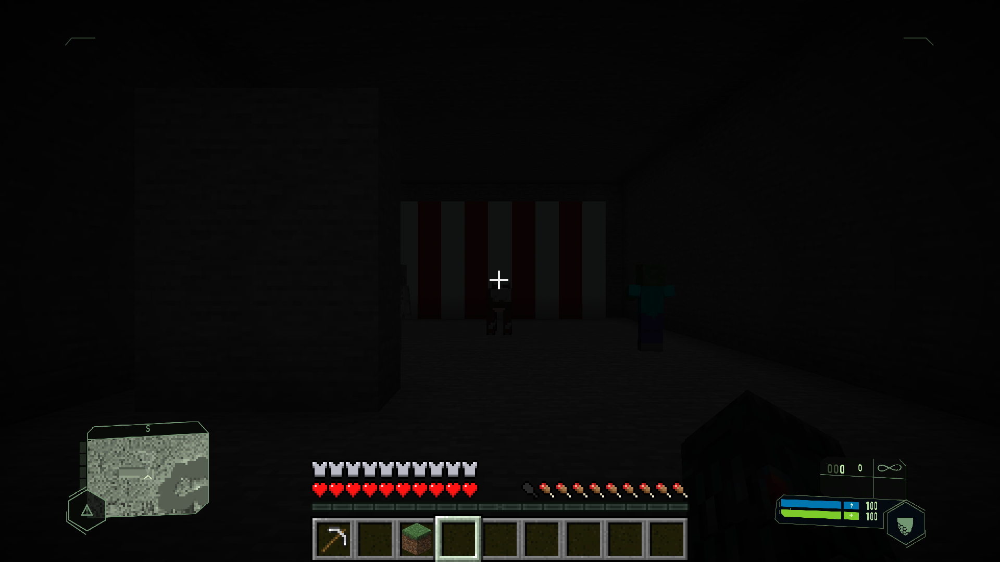
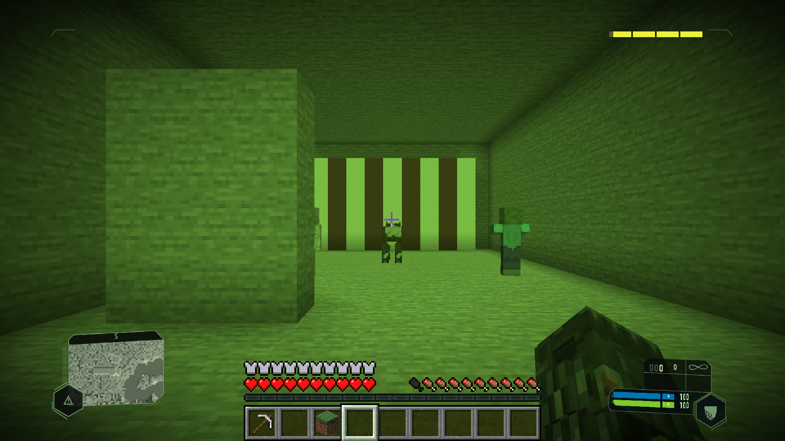
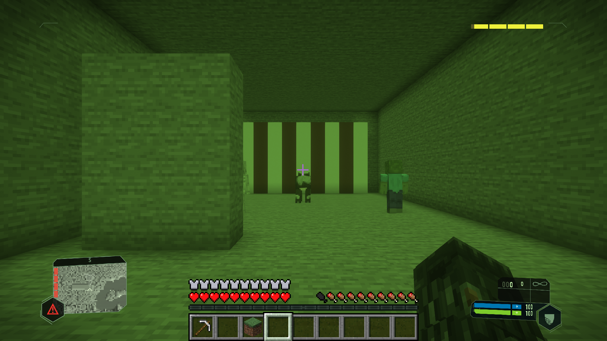
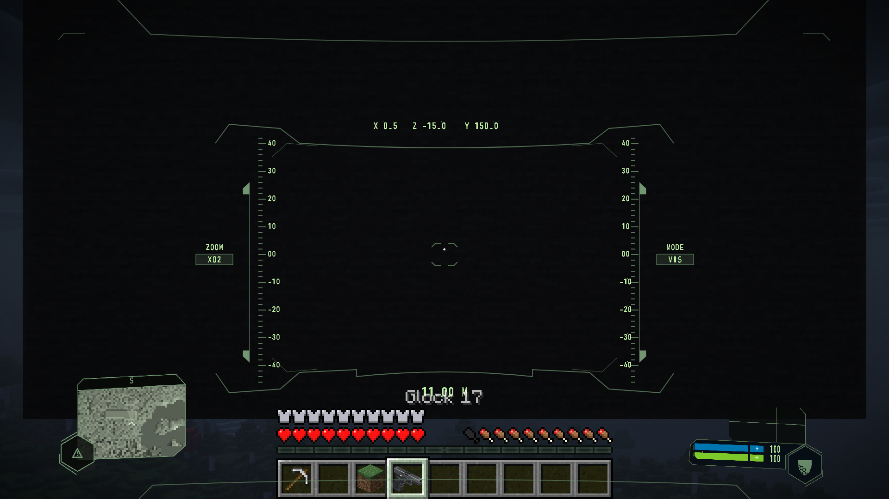
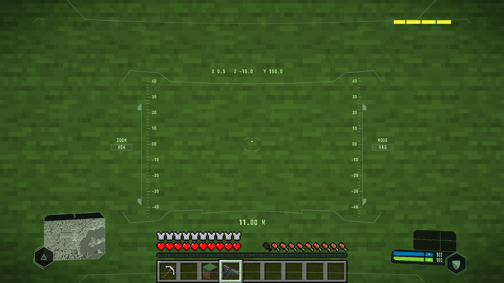
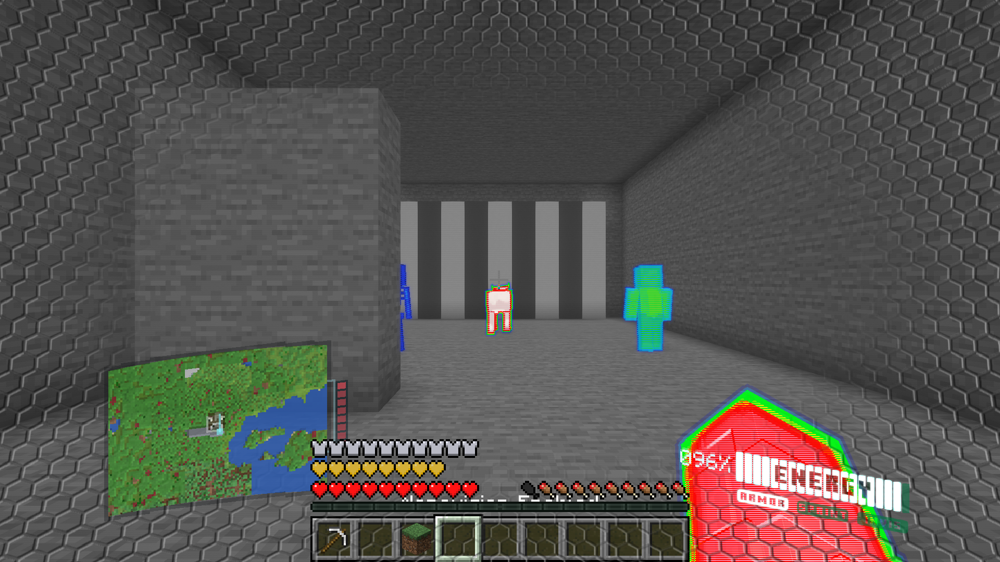
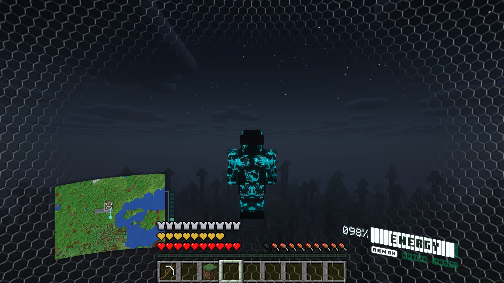
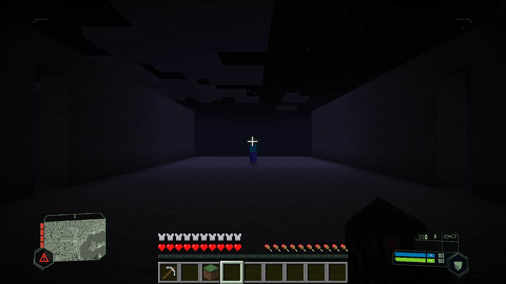
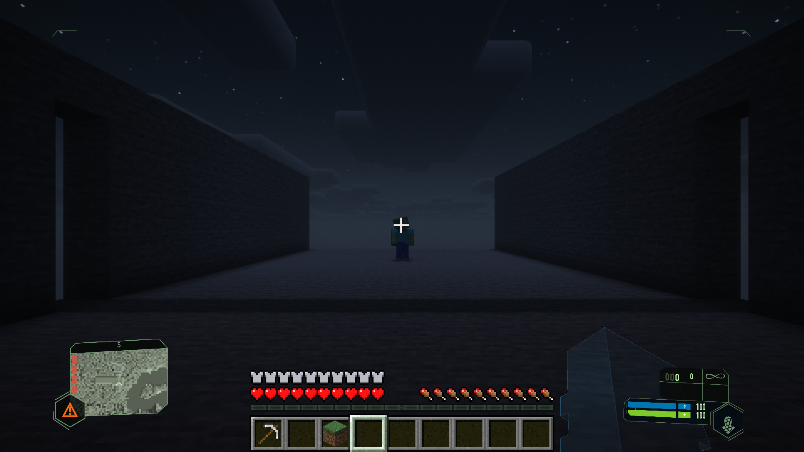

Stabilisation Nanosuit — captures réelles RTX 3070, Minecraft 1.21.1. Mondes et inventaires de test isolés. Les scènes visuelles figent les mobs ; les parcours de poursuite utilisent leur IA naturelle. Voir les rapports pour les limites de compatibilité.

Sans lumière — NV éteintestability-final-placement 
NV finale sans shaderstability-final-placement 
NV avec Complementary et Fresh Animationsstability-combined-final 
Jumelles ×2 et TACZ — compteur masquéstability-combined-final 
Jumelles ×4 et NV — vignette sans doublonstability-combined-final 
Thermique N2 et modèles EMFstability-combined-final 
Armure N2 avec Complementarystability-combined-final NV avec le pack Euphoria existantstability-euphoria 
Barre extérieure gauche — ennemi ciblant le joueurstability-threat-placement 
Camouflage N1 — session complète et IA naturellestability-za-combined